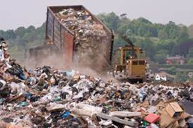

Hi this is Satish Sekhar . This is my web Pages. I will update this Page soon .....
Divide yourself in your class as two teams, Team A and Team B. The members of Team A examine the kind and amount of waste generated in the school while the members of Team B will examine the same in their homes. Categorise all the different kinds of waste products as paper products, glass, metals, plastics, organic waste, etc. Record the finding and determine how different is the type of waste generated in the homes and classroom. Also ask around and with the help of the Internet find out how and where this waste gets disposed off. Create a flowchart and outline the steps between waste generation and disposal.
Everything that is unwanted and not usable is considerd as waste or garbage. Now that you have checked the kind of waste produced in your homes you know you would find vegetable peels, left-over food, newspaper, plastic bage, old rags, paper, tissue, clothes and so many other things!
The waste that is generated can be broadly classified into two categories-biodegradable and non-biodegradable.
Things that can be easily decomposed by natural agents like water, oxygen, ultraviolet rays of the Sun, micro-organisms, etc, are termed as biodegradable. When you eat an apple and throw the core outside, you will see that it desappears in a few week's time. It is acted upon by several micro-organisms like bacteria, fungi or small insects over time. The natural elements like oxygen, water, moisture, and heat aid the decomposition thereby breaking the complex organic forms to simpler forms. The decomposed matter returns back to the soil and thus the soil is once again nourished.
Materials which nanot be broken down or decomposed naturally into soil are labelled as non-biodegradable. These substances consist of plastic materials, meral scraps, aluminium cans, bottels and hazardous chemicals. The plastic bags we use take around 10-1000 years to decompose while the aluminium can takes around 200 years, Therefore, these wastes rather than returning back, contribute to increasing the soild waste which is hazardous for the environment of the Earth. The ever-increasing load of non-biodegradable trash is a growinf concren all over the world.
According to a study conducted by the Government of India, 62 million tonnes of waste is generated annually in the country, out of which 5.6 million tonnes is plastic waste and 15 lakh tone is e-waste. If not dumped directly into water bodies, the solid wastes leach (drain away) into the soil and contaminate groundwater.
E-waste or Electronic waste : You must be aware of the use of plastic being descouraged in our country from quite a lot of places. Yet another form of plastic waste includes e-wastes or electronic waste. E-waste includes not only our discraded electronic equipment's but also the waste generated while manufacturing these electronic devices. Most of the electronic devices a part from the plastic body also contain valuable methods and the rest again end up in the land fill causing major threat to components like air, water and soil in teh environment. In addition to its damaging effect on the environment research shows that prolonged exposure to metals such as lead, arsenic and mercury generated from e-waste can cause serious damage to the reproductive, nervous, excretory and circulatory systems.
In India, most of the waste management is done by people in the unorganised sectors. These informal agencies or the people from the unorganised sectors are the people who come to your houses to collect he wastes. However, these are mostly people who do not have any formal training or knowledge of disposal of wastes. Most of the times these people take whatever is useful to them and throw the rest of the waste into the dumping grounds.
You must have seen these dumping grounds in or around your cities. These are referred to as Landfills, rubbish dump or garbage dump. Originally these were designed as a site for the disposal of waste materials which are biodegradable and non-hazardous in nature, However, with increasing population and increasing waste, landfills today are use for dumping of all kinds of waste products.
Thus it is important to first organise the waste material generated in such large quantities. The first step towards efficent waste-management is to segregate the wastes efficiently. You must have seen the bins with different colours.
Given below are colours that are allocated for a particular type of waste in India.
The Biodegradable waste could easily be managed individually even at home. Vermicomposting pit is an easy way of managing kitchen waste.
Composting : Composting is defined as the process of decomposition of organic matter. It is rich in nutrients and is thus used in gardening, landscaping, horticulture and organic farming. The process of composting requires making a heap of organic matter such as leaves, grass, and leftover food, This organic matter then in a period of a few weeks to few months break down into human. The process of decomposition is aided by adding water, shredded leaves and ensuring proper aeration by regularly turning the mixture or compost.
Vermicomposting : In a compost, in addition to adding water, part plants and ensuring areation sometimes various species of earthworms are also added such as red wrigglers and white earthworms. This process then called vermicompostion is usually applied to the treatment of sewage sludge.
Landfills : Landfills, which we have discussed earlied in the chapcter, is another way of managing biodegradable waste. It is a huge area of land that is used to bury large amount of waste in a way that it does not cause any adverse effect to the environment.
You must have realised by now that most of our wastes produced are non-biodegradable and thus will outnumber the human life span by miles. We thus have to be smart in dealing with this problem before it is too late.
With the current scenario in mind countries all over the world started into following the 3R mantra---Reduce, Re-use and Recycle.
More than anything else, we should try to reduce the consumption and manufacture of items. The less we produce the less we waste.
Few simple steps that could help you reduce waste are :
By re-using item we prevent them from ending up in the landfills, Many people are now reusing old shipping containers for making house and office space. These are afforadable house adn are easily built. These type of houses help teh environment at the same time.
Some of items that you could easily re-use in dialy life are :
The process of using old and discarded intems as the raw material to make something new is called recycling. There are very few materials on the Earth that cannot be recycled.
Some of the items that you could recycle are :
However, one needs to be cautious of the products that should be recycled. The Central Pollution Control Board has formulated different reles to properly recycle or discard solid materials in 2016. One needs to be aware of these rules to safely recycle products.
For example, best way to recycle mobile phones is to leave your old ones with the mobile company. Even if you do not gain financially, this will save you the pollution that these phones cause in the landfills.
Along with these, people world wide are also practising other two Rs--Reject and Repair.
Reject is the act of declining goods which are environmentally harmful such as non-biodegradable items. Repair is to reform old gadgets to make them work again so we do not end up buying new things that would eventually lead to generating more waste.